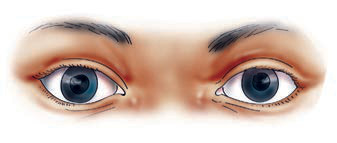
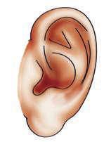

| Na. | Picha | Kazi |
|---|---|---|
| (b) | ii. Kusikiliza nyimbo kuhusu utunzaji wa mazingira | |
| (c) |  | iii. Kutambua ladha ya dawa chungu |
| (d) |  | iv. Kutambua harufu ya kitu kinachoungua |
3. Taja mifano miwili ya vyakula vyenye mojawapo ya ladha zilizomo kwenye jedwali lifuatalo:
| Namba | Ladha | Chakula |
|---|---|---|
| (a) | Utamu | |
| (b) | Umami | |
| (c) | Uchachu | |
| (d) | Uchungu |